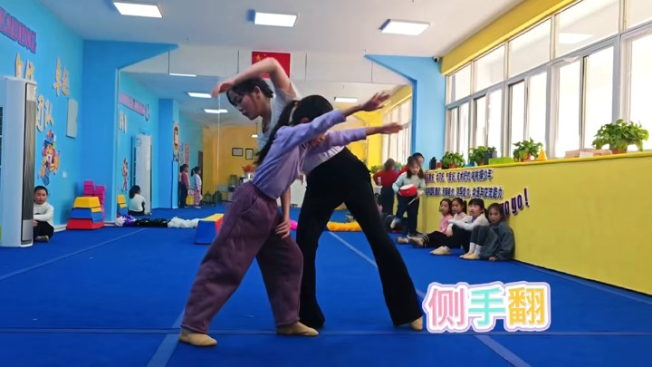

胡文超
田径专项 · 青少年体适能- 高级中学体育与健康教师资格考试合格证明
- 田径项目初级教练员岗位培训合格
- 田径一级运动员经历
ABOUT JIUYUE
氿悦体育，面向宜兴本地青少年和中考体育备考家庭，围绕孩子的起点与目标开展运动教育。

从起点，到每一次练习
了解兴趣、经历和目标，沟通适合的课程方向。
通过示范和分步练习，帮助理解具体动作。
关注动作与练习过程，和家长沟通后续重点。
COACHING TEAM
以下按现有公开资料介绍专业背景。具体班次的授课教练，在预约时沟通确认。
QUALIFICATIONS
体育类校外培训机构审核意见书
少儿趣味田径技能等级认证示范推广单位
少儿趣味田径技能等级认证授权书
营业执照
无锡市啦啦操协会宜兴考级点
TEAM CREDENTIALS
以下图片沿用现站已脱敏的公开资料，分别证明资料所示个人资格。
胡文超高级中学体育与健康教师资格考试合格证明脱敏图
胡文超田径项目初级教练员岗位培训合格证书脱敏图
胡文超田径一级运动员证书脱敏图
胡文超青少年体适能教练结业证脱敏图
梁冰冰高级中学体育与健康教师资格证脱敏图
梁冰冰中国田径协会D级教练员证书脱敏图
陈顺田径二级运动员技术等级查询脱敏图
陈顺田径二级运动员证书脱敏图
陈顺青少年体适能教练Level C结业证脱敏图
陆倩小学体育教师资格证脱敏图
陆倩啦啦操教练员三级证书脱敏图
陈麒昊小学体育教师资格证脱敏图
宗瑜啦啦操裁判员三级证书脱敏图
EVENTS & RECORDS
以下为现有公开资料所示的奖项与活动记录。
2025年江苏省少儿趣味田径俱乐部挑战赛相关奖牌与奖项
2025年无锡市青少年学生啦啦操比赛小学组花球自选套路一等奖
2025年无锡市青少年学生啦啦操比赛初中组花球自选套路一等奖
2023至2024年全国少儿啦啦操精英赛盐城站相关组别冠军奖杯
奖牌或证书未标明队伍名称时，保留相关组别与资料范围的说明。